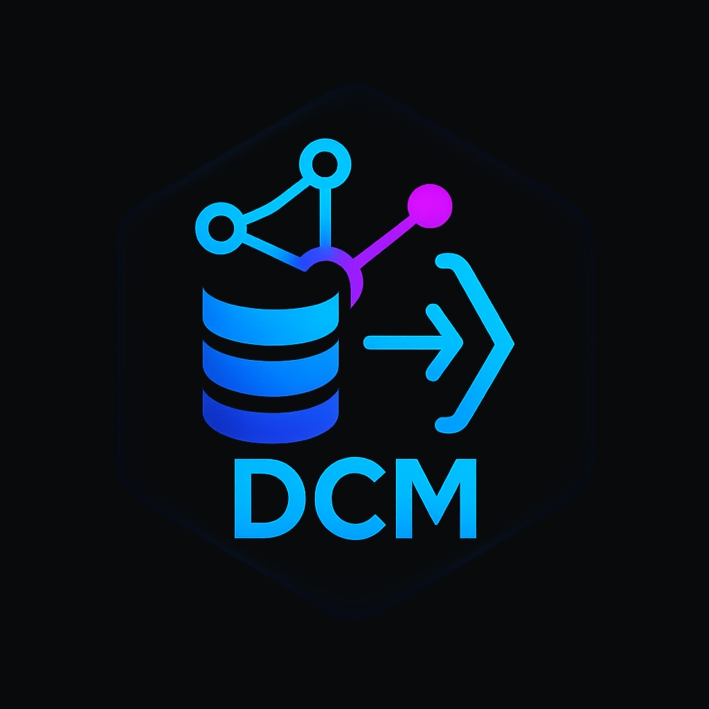

Lecture 1 — Introduction & Tools
Data & Code Management: From Collection to Application
2025-09-25
Welcome!
- Course: Data & Code Management: From Collection to Application
- Time & place: Thursdays 9:00–12:00
- Communication: Slack (class workspace)
- Materials: GitHub repo & website
- Grading: participation (bonus), homeworks (3 indivuals) and final project (group)
- Always refer to the course website dcm.samorso.ch for the latest info!
“Reproducibility is job #1 for modern data science.”
‚Äî everyone who has ever lost a script üòâ
Note
Today’s goals
1. Understand course scope & expectations
2. See why reproducibility matters
3. Meet the core toolchain (R, Python, SQL, GitHub, Markdown/Jupyter/Quarto)
4. Try small, focused exercises
Agenda
- Course overview & evaluation
- Reproducibility in analytics
- Core tools & workflows
- Quarto refresher
- GitHub refresher
- Mini‑exercises
Tip: Slides include short activities you can try during/after class.
Course Overview
- Orientation: hands‑on data & code practices for analytics
- You will:
- write clean R/Python code
- query data via SQL
- document with Markdown/Jupyter/Quarto
- use Git/GitHub (branches, PRs, issues)
- deliver a reproducible project (group)
- We value: clarity, collaboration, curiosity
Tip
Success checklist
- Commit early, commit often
- Make small, reversible changes
- Automate what repeats
- Document decisions, not only code
- Prefer scripts & notebooks over manual clicks
Expectations & Evaluation
- Participation: engaged presence (practicals), Slack questions/answers
- Homeworks: short, targeted (programming, SQL, tooling)
- Project: real‑world style, reproducible deliverable
- Academic integrity: cite sources, no copy‑paste answers
Tools allowed: R, Python, SQL, Quarto, GitHub, AI copilots (with provenance & verification).
What are LLMs?
Definition: Large Language Models (LLMs) are AI models trained on vast amounts of text data to understand and generate human language.
Examples:
- GPT-4, GPT-5 (OpenAI)
- Gemini (Google)
- LLaMA (Meta)
- Claude (Anthropic)
Capabilities:
- Natural language understanding and generation
- Text completion, summarization, translation
- Assistance in various domains, including programming.
Why are they important for programming?
- LLMs can understand code as a special type of language.
- They offer assistance in code generation, debugging, and improving programming productivity.
LLM for Programming - Key Features
- Code Suggestions:
- Automates repetitive coding tasks.
- Helps in writing boilerplate code.
- See for instance GitHub’s copilot.
- Error Debugging:
- Identifies and resolves bugs in code snippets.
- Suggests alternative solutions or optimizations.
- Code Explanation:
- Breaks down complex code into simple explanations.
- Helps in learning new programming concepts.
Benefits of Using LLMs like ChatGPT in Programming
1. Increased Productivity
- Automates repetitive and boilerplate tasks.
- Helps explore new coding approaches faster.
2. Learning and Discovery
- Explains code, libraries, and new languages in an intuitive manner.
- Great for beginners and advanced users alike.
Challenges and Considerations
1. Not Always Correct
- LLMs can suggest incorrect code, it can hallucinate, requiring human oversight.
2. Context Limitations
- LLMs lack the full project context, so they might not understand the specific requirements.
3. Ethical Concerns
- Intellectual property, security, and data privacy must be considered when using AI for programming.
Important
AI policy (short)
Use AI to brainstorm, outline, or lint code. Own the result: verify outputs, write your tests, and document AI assistance (what, why, where).
Minimal Project Structure
project/
├─ data/ # raw/ and processed/ (never overwrite raw)
├─ R/ or src/ # functions, modules
├─ notebooks/ # exploratory analysis
├─ reports/ # Quarto/Markdown outputs
├─ tests/ # unit tests
├─ renv/ or .venv/ # R or Python environment
├─ .gitignore
└─ README.mdTooling Map
- R (tidyverse, data.table) & Python (pandas, polars)
- SQL for data retrieval/joins/aggregations (week 5)
- Git + GitHub for versioning & collaboration
- Markdown/Jupyter/Quarto for literate workflows
- Optional helpers: make, pre-commit, linters
R snippet
Caution
Are these codes reproducible? Why/why not?
Literate Programming with Quarto
- Write text + code together
- Render to HTML/PDF/slides/reports
- Parametrized reports & caching
- Works with R and Python
Render:
Important
House rule: every analysis step appears in a script/notebook—no manual spreadsheet edits.
What is Quarto?
- Quarto: successor of RMarkdown
markdowncontrastsmarkuplanguages (e.g. HTML) which require heavy syntax- Quarto provides a literate programming framework for data science.
- Literate programming: narrative + code in the same document.
- Reproducible research: analyses can be reproduced the same way by someone else.
What is Quarto?
In a nutshell, Quarto builds on Pandoc and execution engines (Knitr for R, Jupyter for Python/Julia/Observable). It allows embedding code into Markdown documents, which can be rendered into multiple formats (HTML, PDF, Word, …).
Create a Quarto document
In RStudio or VSCode, click File → New File → Quarto Document. Or simply create a .qmd file.
Important features of markdown
Three aspects:
- YAML metadata
- Text
- Code cells/chunks
YAML (YAML Ain’t Markup Language)
- Header where options are defined.
- Surrounded by
--- - Options include: author, date, output format, table of contents, themes, code folding, …
Example:
Text in Markdown
Core body, essential for explaining your analysis.
Markdown syntax:
*italics*,**bold**,code style- headers (
#,##,###) - lists (
*,-,+,1.) - links:
[Quarto](https://quarto.org) - blockquotes (
> …) - images:
 - tables (basic Markdown or functions like
knitr::kable())
Extended text features
- Math: in \(\LaTeX\) via
$...$inline or$$...$$display. - Cross-references:
@fig-labelor@sec-label. - Citations with
.bibfiles ([@doe2023]). - You can always use HTML when needed.
Code cells in Quarto
Quarto supports R, Python, Julia, and ObservableJS.
Code cell delimiters:
- In Jupyter notebooks, the same concepts apply — each code cell is language-specific.
Chunk / cell options
Quarto syntax uses YAML-like #| comments:
Options you’ll use most often:
eval: run code?echo: show code?warning: show warnings?cache: reuse computations?
Figures in code cells
Options for plots:
A scatterplot
Printing tables with knitr::kable()
| Sepal.Length | Sepal.Width | Petal.Length | Petal.Width | Species |
|---|---|---|---|---|
| 5.1 | 3.5 | 1.4 | 0.2 | setosa |
| 4.9 | 3.0 | 1.4 | 0.2 | setosa |
| 4.7 | 3.2 | 1.3 | 0.2 | setosa |
| 4.6 | 3.1 | 1.5 | 0.2 | setosa |
| 5.0 | 3.6 | 1.4 | 0.2 | setosa |
For enhanced tables: kableExtra.
Extended tables with kableExtra
Mathpix for equations
Mathpix Snip digitizes handwritten/printed math and pastes directly into Markdown/LaTeX/Word.
Live preview
- RStudio:
quarto preview - VSCode: Quarto extension
- Jupyter: live interactive editing
Instant feedback without full rebuilds.
Version Control with GitHub

Why GitHub?
- Work with others on the same project without endless email exchanges
- Avoid “file_v1”, “file_v2”, “final_version_really.R” chaos
- Track who changed what and when
- Discuss, review, and plan changes in one place
Tip
üí° Think of GitHub as both a time machine and a teamwork hub.
Why GitHub for this course?
We will use GitHub to:
- Work in groups on projects
- Submit homeworks
- Develop programs
What is Git?
Git is a distributed version control system:
- Distributed: every copy of a project has the full history
- Version control: keeps track of all changes to your project
Important
Instead of dozens of “final” files, Git records every change in one clean history.
Types of Version Control Systems
- Local – on your own computer
- Centralized – one main server (risk of failure!)
- Distributed – full history on every machine (Git)

Why Version Control?
- Collaborate safely with others
- Roll back mistakes
- Explore new ideas with branches
- Reduce risks of file loss or corruption

Git ≠ GitHub
- Git = software for version control
- GitHub = website/platform that hosts Git repositories
- Alternatives: GitLab, BitBucket, SourceForge
File States in Git
A file can be:
- Untracked – new, not in Git yet
- Modified – changed, not saved in history
- Staged – marked for next snapshot
- Committed – safely stored in the repository

Ignoring Files
Use a .gitignore file to tell Git which files to skip:
- Temporary files (.Rhistory, .DS_Store)
- Large data files
- Secrets or keys
GitHub: Basic Workflow
- Open your RStudio project (linked to GitHub)
- Work locally as usual
- Save often
- Commit snapshots of your changes
- Push commits to GitHub
- On another computer (or from a teammate) → Pull updates
Tip
Always pull before you push to avoid conflicts!
Commits
- Commit = snapshot of your work
- Good commit messages explain why you changed something, not just what

Common Issues & Fixes
- Wrong repo → Double-check you’re in the right project
- Large files (>100MB) → use another service (Dropbox, Zenodo, etc.)
- Conflicts → someone else changed the same file →
git pull --rebase
- Merge conflicts → same lines changed → talk to your teammate + edit manually

New Habits with GitHub
- Commit often
- Push regularly
- Pull before you start working
- Communicate with teammates
Collaboration Rituals
- Branch → small PR → peer review → merge
- Use Issues with labels (“bug”, “enhancement”, “question”)
- Templates:
PULL_REQUEST_TEMPLATE.md,ISSUE_TEMPLATE.md - Document decisions in
CHANGELOG.md
Note
Activity (2’): In pairs, outline a PR description for adding a new utils/plot.R with one function and one test.
Example PR Description
PR Title
Add utils/plot.R with basic plotting function and test
Summary
- Add plot_scatter() in utils/plot.R
- Add test in tests/testthat/test-plot.R
Details
- Input validation (numeric vectors of equal length)
- Uses ggplot2
- Tests:
- Error if unequal lengths
- Output is "ggplot"
Example PR Description (cont.)
Checklist
- [x] Function implemented
- [x] Tests added
- [x] Documentation with roxygen2
- [ ] CI checks pass
Related Issues
Closes #12 (feature request: plotting utilities)
GitHub in a Nutshell
Git gets easier once you get the basic idea that branches are homeomorphic endofunctors mapping submanifolds of a Hilbert space.
—Isaac Wolkerstorfer (joking)
Git in 6 commands
Note
Activity (think‑pair‑share):
What makes a good commit message? Write one for “fixed weird bug in script” that would help your future self.
Reproducibility in Practice
Reproducibility: Why it matters
Symptoms of non‑reproducible work (raise your hand if you’ve seen these):
- “It works on my machine.”
- “I changed nothing and it broke.”
- “Which file is the final_final_v3.R?”
Principles
- Deterministic environments
- Versioned code and data contracts
- Scripts, not clicks
- Single‑source of truth (parameters, config)
- Literate programming (Markdown/Quarto)
- Automated checks (CI later in course)
Is there a reproducibility crisis?
Environments (determinism)
R — renv
Python — Conda (recommended)
Note
Exercise (1′): List one package you rely on in R and in Python. Why lock its version?
Nondeterminism in LLM
Reproducibility is a bedrock of scientific progress. However, it’s remarkably difficult to get reproducible results out of large language models.
Horace He in collaboration with others at Thinking Machines
Note
Read the full article here
Data Contracts & File Hygiene
- Never overwrite raw/ data
- Validate schemas (columns, types, keys)
- Record data provenance (source, timestamp)
- Use
.gitignoreto avoid committing large/secret files
Common Pitfalls & How to Avoid Them
- Undocumented notebooks → add titles, goals, outputs
- Hidden state (globals) → pass parameters explicitly (next lecture)
- One giant script → split into modules
- No seeds → set seeds where randomness matters
- Unpinned packages → lock versions
Quick Wins You Can Adopt Today
- Create a project with folders from the template earlier
- Initialize Git and push to GitHub
- Set up renv or .venv or equivalent
- Convert one analysis to Quarto
What’s Next
- Next lecture: Programming foundations (R & Python)
- Before next time: ensure you can
- clone a GitHub repo,
- create a branch & commit,
- render a Quarto
.qmdto HTML, - set up
renvor.venv.
Tip
If stuck: ask on Slack—show error, steps tried, and minimal example.
Mini-exercise (1): R
- Open RStudio (or your preferred IDE).
- Create a new R script named
exercise1.R.
- Write R code that:
- Creates a numeric vector of length 5.
- Computes its mean.
- Prints the result with a short message.
- Creates a numeric vector of length 5.
Note
üí° Tip: Use c() for vectors, mean() for averages, and paste() for printing messages.
Mini-exercise (2): Python
- Create a new Python file named
exercise2.py.
- Write a script that:
- Creates a list of 5 numbers.
- Computes their average.
- Prints the result.
- Creates a list of 5 numbers.
Note
üí° Tip: Use sum() and len() to calculate an average.
Mini-exercise (3): Quarto
- Create a new Quarto document named
exercise3.qmd.
- Add:
- A title and author.
- One R code chunk that prints
"Hello R!".
- One Python code chunk that prints
"Hello Python!".
- A title and author.
- Render the document to HTML.
Note
üí° Tip: Use ```{r} and ```{python} for chunks.
Mini-exercise (4): GitHub
- Create a new GitHub repository called
first-exercises.
- Add the three files you created (
exercise1.R,exercise2.py,exercise3.qmd).
- Write a short README.md describing what each file does.
- Commit and push your changes.
Note
üí° Tip: Use GitHub Desktop, git on the command line, or RStudio‚Äôs Git interface.
Mini-exercise (5): R + Data
- In R, load the built-in dataset
mtcars.
- Compute the average miles per gallon (
mpg) by the number of cylinders (cyl).
- Make a simple scatterplot of
mpgvshp(horsepower).
- Save the script as
exercise5.R.
Note
üí° Tip: Look at aggregate() or dplyr::group_by() + summarise(). Use plot() for a quick scatterplot.
Mini-exercise (6): Python + Visualization
- In Python, use the pandas and matplotlib libraries.
- Load the dataset
iris(you can import it fromsklearn.datasets).
- Compute the average petal length per species.
- Make a histogram of sepal lengths.
- Save the script as
exercise6.py.
Note
üí° Tip: pandas.DataFrame.groupby() is useful for summaries.
Mini-exercise (7): Quarto + Reproducibility
- Create a Quarto document called
exercise7.qmd.
- Include:
- A title, author, and date.
- A short text section explaining what the document does.
- One R chunk producing a table of summary statistics (e.g.,
summary(mtcars)).
- One Python chunk producing a plot of the iris dataset.
- A title, author, and date.
- Render both HTML and PDF versions.
Note
üí° Tip: To render PDF, you may need LaTeX installed. Use quarto render exercise7.qmd --to pdf.
Mini-exercise (8): All Together üéØ
- Create a new Quarto document named
exercise8.qmd.
- Inside it:
- Add a short introduction paragraph.
- An R chunk that computes and prints the mean of
mtcars$mpg.
- A Python chunk that loads
irisand plots sepal length vs sepal width.
- Add a short introduction paragraph.
- Render the document to HTML.
- Push the
.qmd, the HTML output, and any supporting files to your GitHub repofirst-exercises.
- Update your README.md to include a short description of this integrated exercise.
Note
üí° Goal: Practice combining R + Python code in Quarto, and making results reproducible via GitHub.
üí° Bonus Opportunity
- If you prepare a solution to one of the mini-exercises
- and present it briefly during the next practical session
üëâ You may receive a bonus point (participation credit).
Note
üåü Tip: The focus is on sharing your approach, not on having a perfect solution.
Q&A
Thanks!
Optional: After class, try converting one old analysis to Quarto and push it to GitHub with a short README.

HEC Lausanne · Business Analytics · Thu 9:00–12:00